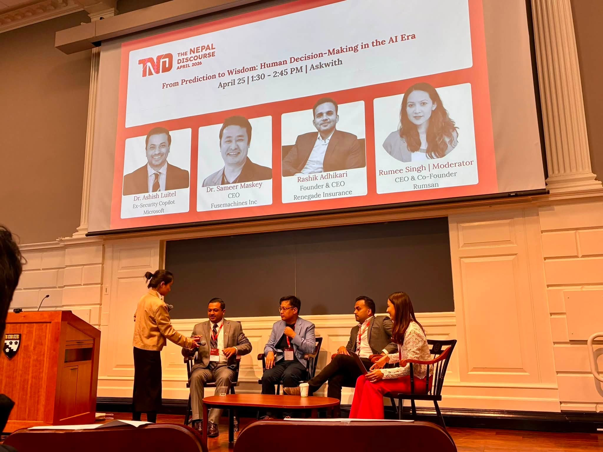

Everything an editor or organizer needs.
Copy any of this directly. If you need a variation at a specific length, write and I will send it.
Usage
- BylineAashis Luitel, or Dr. Aashis Luitel
- Full formAashis Luitel, D.Eng., MPA
- Academic titleAssociate Professor of Artificial Intelligence, University of the Cumberlands
- Industry titleLead Technical Program Manager, Public Sector Security, N-able Technologies
- LocationAurora, Colorado
Approximately 50 words
Aashis Luitel, D.Eng., MPA, is Associate Professor of Artificial Intelligence at the University of the Cumberlands and Lead Technical Program Manager for Public Sector Security at N-able. He previously led Responsible AI, privacy and federal readiness work at Microsoft across Security Copilot and cloud and AI security. He served on active duty in the U.S. Navy and deployed overseas.
Approximately 130 words
Aashis Luitel, D.Eng., MPA, is Associate Professor of Artificial Intelligence at the University of the Cumberlands, where he designed Ethics in Responsible AI for the university's first PhD in Artificial Intelligence cohort and advises doctoral students in AI governance and cybersecurity. He is also Lead Technical Program Manager for Public Sector Security at N-able Technologies, where he owns FedRAMP Moderate and CMMC 2.0 Level 2 compliance programs.
He previously held senior product and program roles at Microsoft across Security Copilot, Defender Threat Intelligence, and cloud and AI security, leading Responsible AI review, privacy engineering, compliance and federal and sovereign cloud readiness. He is a U.S. Navy veteran who served on active duty and deployed overseas. He holds a Doctor of Engineering and a Master of Engineering in Cybersecurity from George Washington University and a Master in Public Administration from Harvard Kennedy School.
Approved images


Right-click to save. For print resolution, request originals by email.